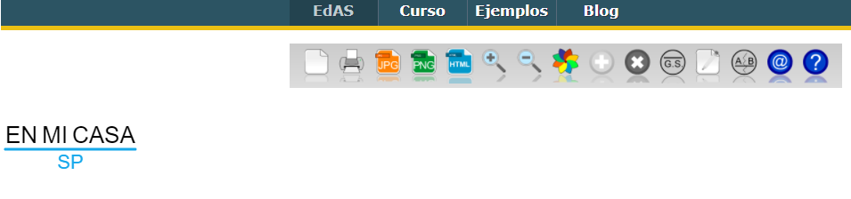
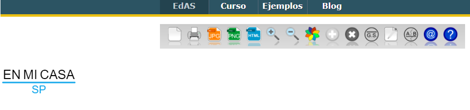

Fase inicial y dos. En casa.
Existen academias como academia Jaf, un profesor.com, canal educativo mistercinco que tienen su propio canal para impartir video-lecciones de carácter abierto en la red.
Sin embargo, resulta conveniente también utilizar otras alternativas a la hora de presentar los contenidos sobre sintaxis a nuestros alumnos y que, a su vez, pueden incluir videos educativos.
Herramientas
Como alternativa a las videos didácticos, se encuentran los muros virtuales, los cuales motivan al alumnado manteniendo así su atención al proporcionarse los contenidos a través de diversas fuentes así como en distintos soportes.
Padlet
Para ello la herramienta PADLET para presentar los contenidos sobre los sintagmas y sus tipos, a través de un muro de contenido interactivo con recursos de diversa naturaleza (imágenes, vídeos, url, etc) que después podéis exportar a (Facebook, Twitter, Google +, Pinterest o Linkedin)
Además, es una herramienta muy sencilla que permite trabajar de manera colaborativa, de ahí que se puede proponer también al alumnado para que elaboren sus propias presentaciones a la vez que desarrollan habilidades de síntesis de información entre otras. En el siguiente vídeo se indican los pasos para poder trabajar con Padlet.
Del mismo modo, os proporciono un ejemplo en el que se usa, junto con otros contenidos de sintaxis, herramienta Padlet para explicar el concepto de sintagmas y sus tipos.
Glogster
Al igual que Padlet, con Glogster se pueden confeccionar muros virtuales muy atractivos para posteriormente compartirlos.
En los siguientes enlaces os destaco algunos ejemplos de murales confeccionado con Glogster acerca de los distintos núcleos que determina la naturaleza de los distintos sintagmas para que comprobéis las múltiples posibilidades que nos ofrece este recurso online. Están en inglés.
Y como no, para que en vuestras próximas clases incluyáis estos recursos os aporto el manual de usuario para docentes para que no os quede ninguna duda respecto a su uso y manejo.
Tanto si utilizamos para elaborar el muro virtual la herramienta Padlet o Glogster, en ambas podemos incluir apuntes y actividades interactivas de carácter abierto presentes en la red, entre otros:
Una vez presentado y trabajados los distintos tipos de sintagmas así como su estructura, en este apartado del Módulo II, vamos a trabajar el ANÁLISIS DE LOS DISTINTOS TIPOS DE SINTAGMAS.
Todos somos sabemos que en la red existen multitud de vídeos, apuntes, presentaciones en las que se nos explican los distintos pasos para ejecutar un análisis sintáctico. Ahora nos vamos a centrar en dos herramientas tecnológicas que nos van a facilitar el análisis sintáctico de los distintos tipos de sintagmas de modo online.
EDAS
Mediante esta herramienta,creada por Patricia Cortés Moreno y Miguel Flecha Fernández, acercaremos a nuestro alumnado a la sintaxis de un modo mucho más visual y atractivo.
Edas es un editor web gratuito que puede utilizarse para realizar tanto un análisis morfológico, como sintáctico o sintagmático.
En el siguiente enlace
Entre las ventajas que nos ofrece esta herramienta se encuentran las siguientes:
- Análisis indefinidos de forma clara y rápida.
- Importar las oraciones a tu cuenta.
- Creación de carpetas para organizar los distintos análisis realizados.
- Dar de alta a usuarios para compartir vuestros análisis sintácticos.
- Exportar vuestras oraciones para guardarlas o imprimirlas.
- Elaborar presentaciones con diapositivas de los distintos análisis sintácticos, paso a paso, para proyectarlas en clase.
- Uso de colores para marcar los distintos niveles de análisis.
- Personalización de la terminologías sintáctica
- No límites a la hora de guardar las propias creaciones.
 

En el siguiente enlace, os remito a una página donde han usado esta herramienta de generador de análisis sintáctico para proporcionar a sus alumnos las correspondientes soluciones a los sintagmas propuesto para analizar.

Otra opción sería, proponer unas oraciones para analizar y mediante un hipervínculo remitir al análisis sintáctico hecho por EDAS.
[LinguaKit](https://linguakit.com/es/analizador-sintactico
LinguaKit es una plataforma que permite 10 usos al día de manera gratuita. Cuenta con módulos visuales, atractivos y directos para establecer etiquetas morfosintácticas o para el analizador sintáctico de una forma sencilla, clara y directa.
El sistema Linguakit adopta como punto de partida un análisis morfosintáctico de aquellas palabras que le indicamos para luego desarrollar un análisis detallado de las diversas relaciones sintácticas que entablan entre ellas. Éste, una vez realizado, se puede guardar en PNG.
Para cada término se nos proporciona información al respecto: qué término desempeña la función de núcleo, qué palabras dependen de él así como el tipo de categoría gramatical que representa y su localización en la oración.